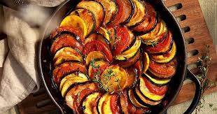

A feijoada é um prato típico brasileiro feito com feijão preto e carnes variadas, geralmente servido com arroz, farofa, couve e laranja.

O espaguete é uma massa longa e fina de origem italiana, geralmente servida com molhos variados como bolonhesa, alho e óleo ou ao sugo.
Ratatouille é um prato tradicional francês feito com legumes cozidos como berinjela, abobrinha, pimentão e tomate, temperados com ervas.